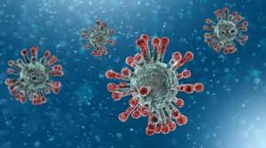

Origem do Coronavirus
Os primeiros casos do coronavírus (Covid-19) tiveram origem no mercado de frutos do mar da cidade de Wuhan localizada na China, as primeiras ocorrências foram relatadas na virada do ano 31/12/2020 e a incidência aumentou de maneira exponencial nas primeiras semanas.
Acredita-se que o vírus Sars-CoV-2 possua como hospedeiros determinadas espécies de morcegos e o pangolim, um animal consumido como alimento exótico em algumas regiões da China.
O período de incubação varia entre 4-14 dias, sendo que ainda é cedo para afirmarmos que o vírus só é transmitido por indivíduos sintomáticos.
A taxa transmissão do vírus é de 2,75, isso quer dizer que uma pessoa infectada transmite, em média, para outros 2,75 indivíduos.
A doença possui uma letalidade global de 3,4%, aumentando de acordo com a idade da pessoa acometida e com as comorbidades presentes.
Sinais, sintomas e achados
Os relatos iniciais da infecção caracterizaram o quadro como uma pneumonia de origem desconhecida, sendo que no início muitos pacientes foram tratados para pneumonia, porém não houve sucesso com a implementação da terapia antibiótica usual. Os primeiros casos apresentaram opacificação mal definida na radiografia de tórax, bilateral e periférica na maioria das vezes e na TC apresentou-se com um padrão em “vidro fosco” e zonas de mosaico (Figura 1). Hoje sabemos que cerca de 59% dos pacientes apresentam alterações no exame de imagem, ou seja, exame de imagem sem alterações não é fator de exclusão.
Figura 1 – Pulmões de um chinês de 44 anos que morreu por conta da doença (Foto: Radiological Society of North America (RSNA)
O paciente acometido pelo Covid-19 apresenta, quando sintomático, os seguintes sintomas:
Tosse: 65-80%
Febre: 45-85%
Dispneia: 30-40%
Sintomas gastrointestinais: 10%
É válido citar que por ser uma doença nova ainda não sabemos ao certo todas as suas formas de apresentação.
Diagnóstico do Coronavírus
Os casos suspeitos de Covid-19 são aqueles em que os pacientes apresentam-se com sintomas relatados acima e que tenha viajado, entrado em contato com alguém com diagnóstico confirmado ou sejam residentes de lugares com registros da doença.
O diagnóstico definitivo é realizado através da técnica de RT-PCR com uma amostra colhida da orofaringe do paciente, sendo que TODO paciente com suspeita de infecção pelo coronavírus deverá ter o seu caso notificado para o órgão sanitário responsável.
É importante destacar que 70 a 80% dos indivíduos infectados são assintomáticos, e para aqueles pacientes com sintomas leves o indicado é que mantenham-se em isolamento residencial e o serviço de saúde só deverá ser procurado em casos em que haja dificuldade respiratória ou na vigência de comorbidades importantes.

Tratamento do Coronavírus
O tratamento indicado para a Covid-19 é meramente sintomático nos casos leves, sendo que instituições europeias como o Ministério da Saúde da França têm recomendado que fármacos como o Ibuprofeno e a Cortisona sejam evitados, dando preferência ao paracetamol e a dipirona.
Recentemente foi levantada a possibilidade de que os Inibidores da Enzima Conversora de Angiotensina (IECA) e os Bloqueadores dos Receptores de Angiotensina (BRA) pudessem piorar o desfecho nos casos devido ao aumento da concentração da enzima conversora de angiotensina 2 (ECA-2), porém a Sociedade Brasileira de Cardiologia emitiu uma nota recomendado que o seu uso não seja descontinuado e que os pacientes fossem avaliados individualmente.
Entre 10-15% dos pacientes acometidos necessitarão de um leito de terapia intensiva, sendo que o principal alerta para um mau prognóstico são os sinais de insuficiência respiratória aguda, nesse caso específico a obtenção de uma via aérea avançada não deve ser postergada, é importante lembrar que a Intubação Orotraqueal deve ser realizada com Equipamento de Proteção Individual adequado pois o procedimento possui alta capacidade de aerossolização.
Idade avançada e comorbidades associadas também são variáveis que indicam um prognóstico adverso, de todo modo, é importante que nos pacientes que evoluam para uma condição crítica que as medidas de controle não tenham a sua implementação adiada.
Os pacientes internados em Unidade De Terapia Intensiva (UTI) devem ser isolados em leitos apropriados e submetidos às medidas de vigilância padrão.
Prevenção do Coronavírus
O isolamento social é a melhor medida que podemos adotar nesse momento, como foi supracitado, o vírus possui uma alta taxa de transmissão e grande parte dos portadores são assintomáticos. Embora a taxa de mortalidade seja relativamente baixa entre os jovens e jovens adultos (0,2%), a infecção pode ser fatal nas populações de risco.
O uso de máscaras somente está indicado para pacientes infectados, sintomáticos, seus cuidadores e profissionais de saúde, sendo que máscaras que protejam contra gotículas são eficazes na maioria dos casos, exceto durante procedimentos que promovam aerossolização. Atualmente não há indicação para o uso de máscaras por pessoas saudáveis.
A lavagem constante das mãos com água e sabão e/ou uso do álcool gel/líquido a 70% é uma medida que possui grande eficácia na prevenção contra o coronavírus.